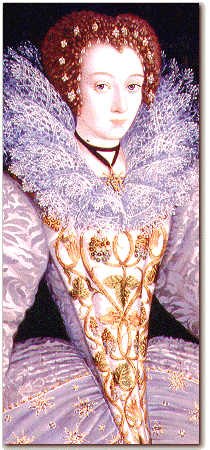

 |
| From the mercers
and drapers, we offer a selection of fabrics suitable for
men's
doublets,
jerkins, and hose and ladies'
gowns
and petticoats. Choose from Italian silks and taffetas, imported
velvets and brocades, cloth made of gold or silver threads, and fine
woolens and linens.
From the skinners, we offer furs and skins of sable, ermine, squirrel, lynx, weasel, rabbit, and swan, to provide both luxury and warmth. From the seamstresses, we have gathered the finest ruffs, cuffs, and partlets, as well as shirts and smocks in linen or silk. |